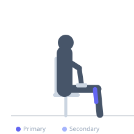

Exercise guide / Seated Calf Raise — Toes Angled Out
Seated Calf Raise — Toes Angled Out
A seated calf raise performed with the toes angled outward (duck-footed position), which shifts the emphasis toward the inner gastrocnemius medial head and the medial soleus fibers. Because the seat position keeps the knee bent, the soleus is the primary target regardless of foot angle, but the medial toe-out position creates a slight internal bias in calf muscle fiber recruitment. Used in rehabilitation programs addressing medial calf weakness or asymmetry.
Primary muscles
soleus
gastrocnemius medial
Secondary muscles
gastrocnemius lateral
Equipment
Dumbbell (Fixed)


Starting position
- Sit on a bench with feet flat, toes turned outward approximately 15-30 degrees. Rest a dumbbell or plate on each thigh or use a seated calf raise machine.
Setup
- Position the balls of the feet on the edge of a step or plate for full range of motion. Keep the knee angle at approximately 90 degrees throughout.
Steps
- Step 1: Sit tall with toes externally rotated and feet positioned for full range.
- Step 2: Lower the heels to achieve a full calf stretch at the bottom.
- Step 3: Press up through the balls of the feet to full plantarflexion, emphasizing the inner calf.
- Step 4: Lower slowly under control. Repeat.
Coaching cues
- Feel the inner calf activate at the top of the movement
- Control the lowering phase — do not let gravity drop the heel
- Maintain the same knee angle throughout
Breathing
- Exhale as you rise onto toes. Inhale as you lower.
Range of motion
- Full range from maximal dorsiflexion to full plantarflexion. Quality over speed.
Tempo
- 2-1-2-1 (2s lower, 1s stretch, 2s rise, 1s squeeze at top)
Common mistakes
- Partial range of motion — not achieving full stretch or contraction
- Using momentum by bouncing at the bottom
- Rotating the entire lower limb rather than just pointing the toes outward
Safety
- Avoid if you have medial knee discomfort with toe-out position
- Consult a physiotherapist for use in specific Achilles or calf injury rehabilitation
Training
- endurance: 15–25 reps
- mobility: 10–15 reps
- endurance: 2–4 sets
- mobility: 2–3 sets
- Rest: {'endurance': 45, 'mobility': 60}